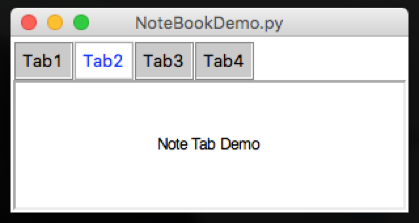

Container Options
Label Frame
A way of grouping widgets into a box, with a label at the top of the box.

- Position the LabelFrame within the grid, then position widgets inside the LabelFrame
.startLabelFrame(name).stopLabelFrame()
Used to start and stop a labelFrame.setSticky(coords)
Used to specify how widgets should be positioned inside the LabelFrame
NoteBook
A way to create a (basic) tabbed-style interface.

- Position the NoteBook within the grid, start a Tab, then position widgets inside the Tab
.startNoteBook(name).stopNoteBook()
Used to start & stop the main NoteBook.startNoteTab(name).stopNoteTab()
Used to start and stop each of the tabs in the NoteBook.
PanedWindow
A way to arrange re-sizable frames, with drag-bars.
- Call
.startPanedWindow(name)to create the initial pane - Then keep calling it to add additional panes
- Calling
.setPanedWindowVertical(name)will change the layout to vertical, allowing more configurations.
Horizontal Panes
- Create an initial pane
- Keep adding panes to the initial pane

Vertical Panes
- Create an initial pane
- Make it vertical
- Add a second pane
- Keep adding panes to the inittial pane

E-Pane
- Create an initial pane
- Add a second pane
- Make the second pane vertical
- The remaining panes are added to frame 2

T-Pane
- Create an initial pane
- Make it vertical
- Add a second pane
- Add the remaining panes to pane 2

SubWindow
A way to add additional windows, which can be hidden and shown.
.startSubwindow(name).stopSubwindow()
Used to start and stop defining a SubWindow.showSubWindow(name).hideSubWindow(name)
Used to show and hide the specified SubWindow